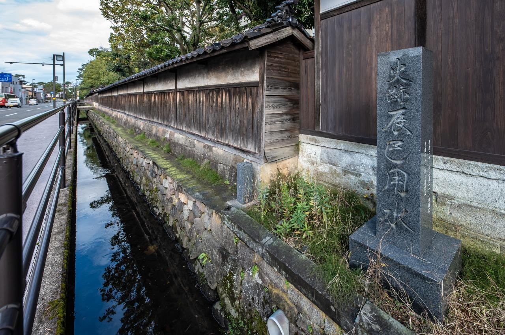
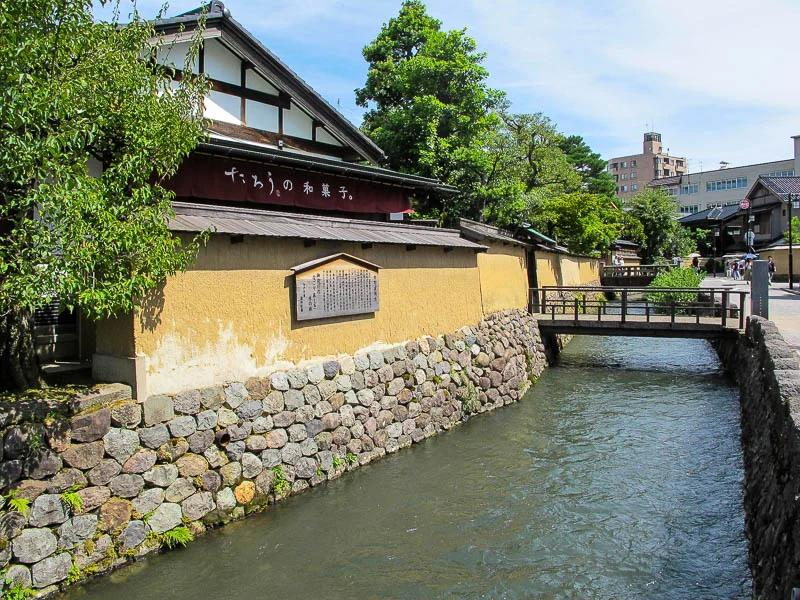
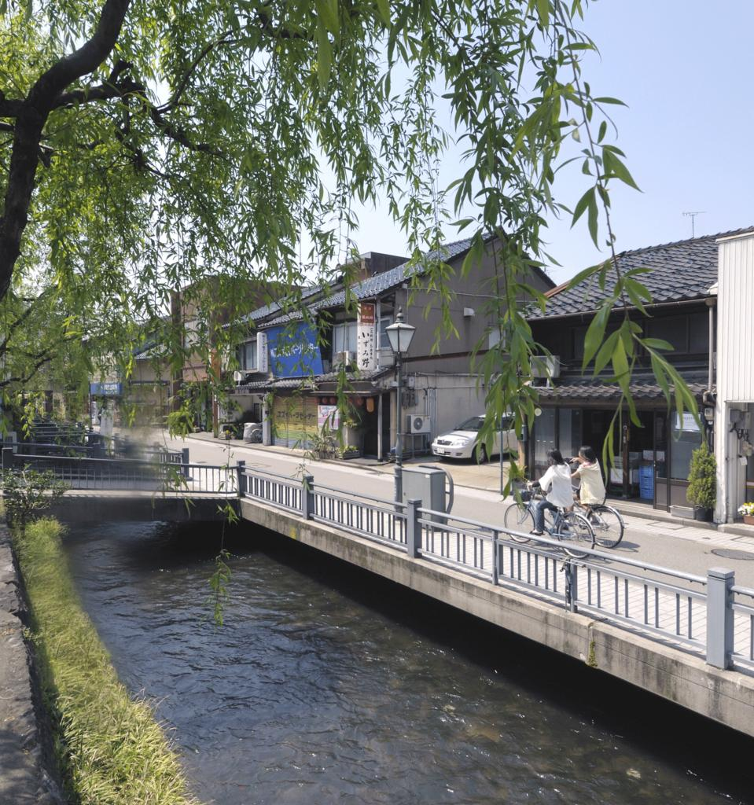

水の流れが育てた城下町
金沢の用水は、農業だけでなく、防火や物資の運搬、水車を使った産業など、人々の暮らしを支えてきました。ここでは、金沢の12か所の用水について、歴史と今に残る見どころを紹介します。
01 / TATSUMI
辰巳用水
金沢城の水を支えた用水

大火をきっかけに金沢城の水利改善を目指して造られた用水。地形を生かした当時の土木技術と、現在も残る水の景観が特徴です。
歴史と成り立ち
寛永8年（1631年）の法船寺大火をきっかけに、金沢城の水利を改善するために造られました。小立野台地の地形を利用し、当時の先端的な技術によって1年足らずで完成したとされています。
明治時代以降は、農業用水や生活用水として使われたほか、水車を動かして精米や製粉を行うためにも利用されました。
今に残る景観・見どころ
取水口から兼六園までの水路の長さは約11km。上流部には岩盤を掘った隧道（トンネル状の水路）があり、江戸時代の姿が良好に残されています。
中村記念美術館と石川県立美術館をつなぐ「美術の小径」では、滝のように流れる水を眺めることができ、夏には涼しさも感じられます。
02 / ONOSHO
大野庄用水
城下町の発展と物資運搬

金沢でも古い歴史を持つとされる用水。木材などの物資を運び、農業や暮らしを支えてきました。
歴史と成り立ち
金沢でも最も古い用水とされ、尾山御坊の時代から存在した可能性が伝承されています。灌漑（農地に水を送ること）に加え、物資運搬、防火、防御、融雪など幅広い用途で使われてきました。
金沢城の築城にも大きな役割を果たしたと伝えられています。かつて旧宮腰（金石港）から大量の木材を運んだことから、「御荷川（おにがわ）」または「鬼川」とも呼ばれました。
古道木揚場（中橋町）より下流は「木曳川」と呼ばれ、旧戸板村・旧鞍月村・旧大野村・旧金石町の農地も潤してきました。
今に残る景観・見どころ
開渠（地表を流れる水路）の始まりでは、大正4年（1915年）の銘板を見ることができます。
片町2丁目の染物店では、今も用水を使った糊落としが行われていると資料に記されています。
長町武家屋敷跡周辺では、用水の流れと町並みを一緒に楽しめ、小魚が見られることもあります。
03 / KURATSUKI
鞍月用水
水車と近代産業を動かした水

農業や城下町の防御だけでなく、水車を通じてものづくりを支えた用水です。
歴史と成り立ち
鞍月方面の田畑を潤すために利用され、柿木畠から長町までの区間では金沢城の外堀（惣構）の役割も果たしました。築造時期ははっきり分かっていません。
正保年間（1644〜1648年）、菜種油を製造する水車を安定して動かすために水路が改修されたと伝えられています。取水堰には「油瀬木」という名が残っています。
明治以降は精米・製粉用の水車が増え、明治初期には金沢製糸場の動力にも利用されました。撚糸・機業・精錬業など、近代の産業を支える水でもありました。
今に残る景観・見どころ
開渠化やポケットパークの整備が進み、街の中で水に親しめる空間が生まれています。
04 / IZUMI
泉用水
寺町台地を巡る農業用水
城下町の古い地図にも登場し、寺町台地の裾を流れる農業用水です。
歴史と成り立ち
藩政初期から存在する農業用水で、17世紀後半の城下図にも描かれています。犀川大橋の直下に旧取水口があり、寺町台地の裾を巡るように流れ、旧米丸村や旧三馬村の農地を潤してきました。
今に残る景観・見どころ
アーチ状の水路や石積みの護岸が見られます。にし茶屋街の近くには、一橋ごとにデザインの異なる市道橋が架かっています。
05 / NAKAMURA TAKABATAKE
中村高畠用水
二つの流れが結びついた用水
もとは別々だった中村用水と高畠用水。大正時代に取入口が共通になりました。
歴史と成り立ち
中村用水は藩政初期からある農業用水で、17世紀後半の城下図にも存在が確認されています。高畠用水はもともと別の流れでしたが、大正7年（1918年）に取入口を同じくし、現在の名称となりました。
今に残る景観・見どころ
神田町児童公園には、用水の水を引き入れた親水空間が整備されています。
06 / ASAHI
旭用水
清水と緑の景観
小立野台地沿いを流れ、かつて人々の暮らしに清らかな水を届けた用水です。
歴史と成り立ち
小立野台地沿いで、浅野川左岸から取水している唯一の用水です。旭町に通じていることから「旭用水」と呼ばれるようになりました。
鶴間坂周辺はかつて竹藪や林が広がり、藩政期には風雅を好む人々が集まったといわれています。坂の中腹にあった「旭清水」は周辺の住民の飲料水として重宝されましたが、昭和30年頃に枯れ、現在は湧き口の跡が残ります。
今に残る景観・見どころ
石積みの護岸や洗い場、水面にかかる花や緑など、周囲の段丘の緑と調和した景観が魅力です。
07 / KANAURA
金浦用水
旧金浦郷を潤した水路
かつての地域名に由来する、地域の農地を支えた用水です。
歴史と成り立ち
藩政期から明治中期にかけて「旧金浦郷」と呼ばれていた地域一帯を潤していたことから、その名が付いたとされています。
今に残る景観・見どころ
銚子町では、民家の庭先に鑑賞用の水車が見られると資料に記されています。
08 / KOBASHI
小橋用水
水車と菜種油づくり
浅野川から取水し、水車を使ったものづくりにも関わった歴史を持ちます。
歴史と成り立ち
正確な築造年代は分かっていませんが、17世紀後半の城下図には浅野川の小橋上流から取水する水路が描かれています。
三代藩主前田利常の時代、旧水車町に菜種油を製造する水車が設置されたとされ、17世紀前半には水路が存在していたと考えられています。
今に残る景観・見どころ
元町第三児童公園には、かつての水車の姿をしのばせる木製水車が設けられています。
09 / NAKAJIMA
中島用水
自然の流れから農業用水へ
浅野川から派生した自然水路を起源とする可能性がある用水です。
歴史と成り立ち
元禄11年（1698年）に、小橋用水とあわせて狭くなった水路を改修したという記録があります。もとは浅野川から分かれた自然水路だったと考えられています。
小橋用水と共通の可動堰が造られる以前は、旧中島町に瀬木を設けて水を取り入れていました。
今に残る景観・見どころ
市街地では多くが暗渠（地中に覆われた水路）となっていますが、沖町・磯部町などでは農業用水として地域を潤しています。
10 / KANTARO RIVER
勘太郎川
水車産業を支えた辰巳用水の分流
辰巳用水から分かれ、かつて周辺の産業にも使われた流れです。
歴史と成り立ち
辰巳用水の分流で、石引町に住んでいた「勘太郎」という人物に由来する名だといわれていますが、由来は定かではありません。
戦後まで、旧百姓町（幸町）・鱗町・本多町には、水車を使って製糸、精錬、精米、製粉などを行う家が多くありました。
今に残る景観・見どころ
白山坂から二十人坂付近には、市街地とは思えないようなのどかな風景が広がっています。
11 / TERATSU
寺津用水
農業・発電・上水道を支える
山あいの水を農業に届け、その後は発電や上水道にも使われた用水です。
歴史と成り立ち
正保3年（1646年）、浪人の田中覚兵衛が藩に提案し、寛文4年（1664年）に工事が始まり、翌年完成しました。
辰巳用水より上流の土清水町・末町・辰巳町・上辰巳町を潤すために造られ、犀川の最上流から取水しています。上流には隧道（トンネル状の水路）が掘られました。
明治33年（1900年）には、この水を利用した金沢市最初の発電所「辰巳発電所」が完成。昭和5年（1930年）の末浄水場完成後は、市内の上水道にも利用されています。
今に残る景観・見どころ
用水沿いには、自然豊かな遊歩道が整備されています。
12 / NAGASAKA
長坂用水
新しい農地を開くための水
寺町台地の農地を潤し、地域の開墾と発展に関わってきました。
歴史と成り立ち
押野村の十村太兵衛らが、寺町台地を灌漑する目的で藩命のもと工事を始めました。犀川の支流・内川から水を取り入れる長坂用水を開削し、長坂新村（長坂・長坂台）の開村や泉野方面の生産力向上につながりました。
昭和48年（1973年）には上流部が犀川浄水場の導水路と共用になり、水路が4km近く短くなりました。
今に残る景観・見どころ
内川地区では竹林の間を縫うように流れ、自然に近い姿を残しています。